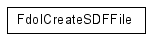
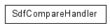
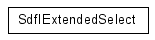
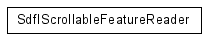

API Reference
OSGeo FDO Provider for SDF
Main Page
Classes
Files
Alphabetical List
Class List
Class Hierarchy
Class Members
FDO Provider for SDF Graphical Class Hierarchy
Go to the textual class hierarchy




Comments?